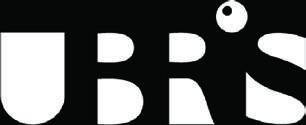
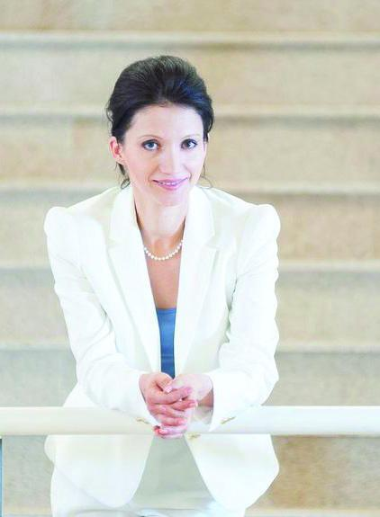

01
CR01

UBRIS / LEARNING DESIGN / OLIMPIA MESA
Învățarea se întâmplă.
Dar ce se schimbă în business?
Audit strategic al capabilității organizaționale.
Claritate, dovezi și o hartă către performanță.
01 / O ALTĂ ÎNTREBARE
Activitatea este adesea confundată cu impactul. Problema este, de cele mai multe ori, în arhitectura sistemului.
Programele sunt livrate, participarea arată bine, iar evaluările sunt pozitive. Trei sau șase luni mai târziu, indicatorii de business pot rămâne neschimbați, managerii observă puține comportamente noi, iar vechile obiceiuri reapar.
Funcțiile de learning au fost construite să livreze experiențe. Astăzi li se cere să livreze performanță. Asta cere o diagnoză mai clară, aliniere strategică, comportamente definite și rezultate măsurabile.
O perspectivă externă aduce obiectivitate, întrebări dificile și distanța necesară pentru a identifica nealinierile structurale. Olimpia lucrează alături de echipa L&D pentru a verifica și întări sistemul.
O ofertă de audit și asigurare independentă a performanței. Nu un program de training sau coaching pentru HR.
CE URMĂRIM DINCOLO DE PARTICIPARE
Prezentarea urmărește cinci semnale distincte. Unde se întrerupe legătura dintre acces și schimbarea susținută?
CR01
CR02
CR03
CR04
CR05
PDF-ul ilustrează aceste semnale prin valorile 72%, 67%, 83%, 33% și 22%. Documentul nu precizează un eșantion sau o metodă de calcul; valorile nu sunt prezentate aici ca rezultate ale unui client, benchmarkuri sau promisiuni.
02 / PENTRU CINE
Și pentru echipele L&D care vor să treacă de la training bine livrat la schimbare proiectată intenționat.
Learningul este strategic, dar impactul său nu a fost evaluat independent.
Există competență și implicare, dar nu suficientă vizibilitate asupra metodologiei orientate spre performanță.
Leadershipul vrea certitudinea că inițiativele L&D sunt aliniate structural obiectivelor strategice.
Investiții digitale semnificative, engagement inegal și rezultate de business greu de atribuit.
Întrebarea comună: ce ajustări transformă infrastructura de learning într-un avantaj real de capabilitate?
03 / OFERTA DE AUDIT STRATEGIC
Fiecare modul poate fi contractat independent. Alegem împreună punctul în care claritatea produce cea mai mare valoare.
CUM LUCRĂM
Clarificăm obiectivele, criteriile de audit, documentele și aria evaluării.
Examinăm dovezile, procesele și designul, în funcție de modulele selectate.
Primești constatări, puncte forte, lacune și recomandări concrete.
Discutăm implicațiile și harta de îmbunătățire alături de decidenți.
ARIA DE LUCRU & INVESTIȚIA
Oferta descrie majoritatea angajamentelor într-un interval de la zona medie a sumelor cu patru cifre până la zona inferioară a sumelor cu cinci cifre, în funcție de modulele selectate.
Moneda nu este precizată în document. Bugetul, moneda și condițiile se confirmă în propunerea personalizată.
Deschide oferta originală · PDF, 16 pagini ↗04 / SELF-AUDIT INTERACTIV
Alege răspunsurile care descriu dovezile pe care le ai astăzi. Deschide fiecare cartonaș, apoi vezi soluțiile și modulele de explorat.
10 întrebări · 5 perspective · fără date personale.
Instrument orientativ propus pentru această pagină; nu înlocuiește auditul independent.
Completează cele 10 întrebări pentru o hartă a priorităților.
HARTA TA ORIENTATIVĂ
Scorurile indică nivelul dovezilor declarate, nu performanța de business. Prioritizarea folosește o regulă simplă: cele mai puține dovezi, primele de investigat. Fără benchmark extern sau promisiune de ROI. Răspunsurile rămân doar în această pagină și se șterg la reîncărcare.
05 / UN CONCEPT PENTRU CORPORAȚII
Capabilitatea organizației,
la masa deciziilor.
O prezență consultativă propusă în biroul CEO-ului, care conectează CEO, CHRO și L&D în jurul acelorași priorități de performanță.
Auditul arată unde există rupturi. CEO Office propune un cadru în care leadershipul decide ce se schimbă, cine răspunde și ce dovezi va urmări.
Explorează conceptul ↗Extensie conceptuală propusă, suplimentară ofertei din PDF. Formatul, frecvența, livrabilele finale și investiția se stabilesc împreună.
Prezență de advisory. Deciziile și implementarea rămân la companie; conceptul nu implică un rol executiv permanent sau rezultate garantate.

06 / PERSPECTIVA DIN SPATELE AUDITULUI
Partner & Head of Learning Design / UBRIS
Learning design, strategie de capabilitate și performanță organizațională.
În oferta sa, Olimpia descrie 17 ani de experiență la intersecția acestor discipline și sute de programe corporate proiectate și auditate, live și online, în banking, asigurări, retail, tehnologie și producție.
Fondatoarea Instructional Design SRL și creatoarea ecosistemului HPL Schools™, este autoarea How People Learn și a metodologiei T4HPL, orientată spre rezultate comportamentale și de performanță măsurabile.
În UBRIS Center, contribuie la inițiative de performanță și dezvoltare a capabilităților într-un mediu multidisciplinar, cu abordări informate de cercetare.
Mai multe despre Olimpia ↗07 / UBRIS CENTER
Strategia, învățarea, tehnologia și spațiul se întâlnesc într-un ecosistem de expertiză. O echipă de specialiști care lucrează împreună pentru proiecte cu impact.
Valorile care ghidează munca
AttentionActionCreativityDisciplineBeautyMihai Sirbu
Founder & Head of Strategy
Olimpia Mesa
Partner & Head of Learning Design
Valeriu Timus
Partner & Head of Legal Design
Sebastian Boureanu
Partner & Head of Financial Design
Servicii, valori, colaborări și echipă — reproduse din documentul furnizat.
Prezentarea integrală a serviciilor, valorilor și colaborărilor UBRIS se regăsește în PDF-ul original și pe ubris.com.
URMĂTORUL PAS / O CONVERSAȚIE STRATEGICĂ
Începem cu prioritățile tale.
Stabilim împreună ce merită auditat.
Linkul deschide aplicația ta de email. Nimic nu se trimite automat.